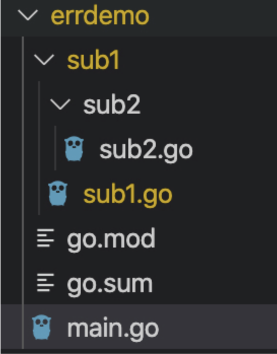
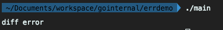
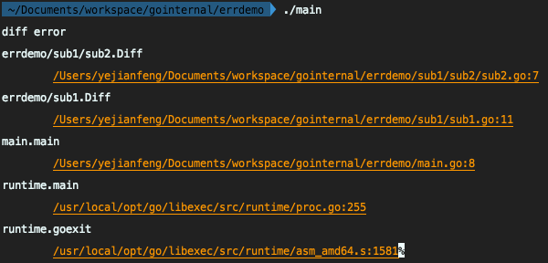
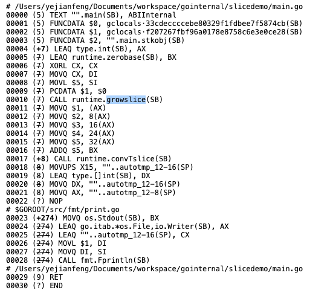
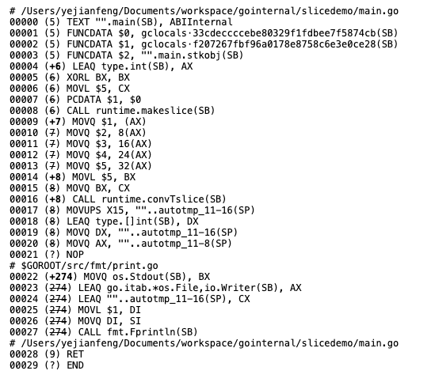
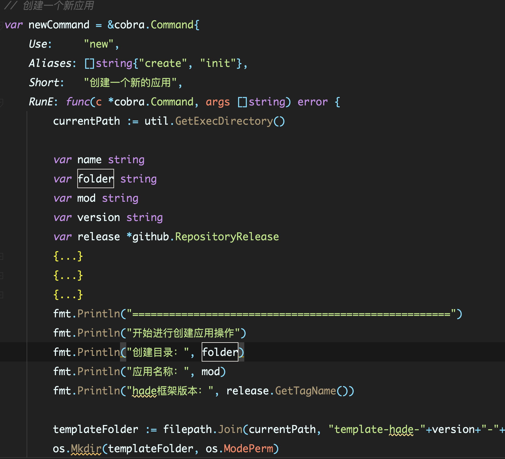

- 00 开篇词 这样入门Go，才能少走弯路.md
- 01 前世今生：你不得不了解的Go的历史和现状.md
- 02 拒绝“Hello and Bye”：Go语言的设计哲学是怎么一回事？.md
- 03 配好环境：选择一种最适合你的Go安装方法.md
- 04 初窥门径：一个Go程序的结构是怎样的？.md
- 05 标准先行：Go项目的布局标准是什么？.md
- 06 构建模式：Go是怎么解决包依赖管理问题的？.md
- 07 构建模式：Go Module的6类常规操作.md
- 08 入口函数与包初始化：搞清Go程序的执行次序.md
- 09 即学即练：构建一个Web服务就是这么简单.md
- 10 变量声明：静态语言有别于动态语言的重要特征.md
- 11 代码块与作用域：如何保证变量不会被遮蔽？.md
- 12 基本数据类型：Go原生支持的数值类型有哪些？.md
- 13 基本数据类型：为什么Go要原生支持字符串类型？.md
- 14 常量：Go在“常量”设计上的创新有哪些？.md
- 15 同构复合类型：从定长数组到变长切片.md
- 16 复合数据类型：原生map类型的实现机制是怎样的？.md
- 17 复合数据类型：用结构体建立对真实世界的抽象.md
- 18 控制结构：if的“快乐路径”原则.md
- 19 控制结构：Go的for循环，仅此一种.md
- 20 控制结构：Go中的switch语句有哪些变化？.md
- 21 函数：请叫我“一等公民”.md
- 22 函数：怎么结合多返回值进行错误处理？.md
- 23 函数：怎么让函数更简洁健壮？.md
- 24 方法：理解“方法”的本质.md
- 25 方法：方法集合与如何选择receiver类型？.md
- 26 方法：如何用类型嵌入模拟实现“继承”？.md
- 27 即学即练：跟踪函数调用链，理解代码更直观.md
- 28 接口：接口即契约.md
- 29 接口：为什么nil接口不等于nil？.md
- 30 接口：Go中最强大的魔法.md
- 31 并发：Go的并发方案实现方案是怎样的？.md
- 32 并发：聊聊Goroutine调度器的原理.md
- 33 并发：小channel中蕴含大智慧.md
- 34 并发：如何使用共享变量？.md
- 35 即学即练：如何实现一个轻量级线程池？.md
- 36 打稳根基：怎么实现一个TCP服务器？（上）.md
- 37 代码操练：怎么实现一个TCP服务器？（中）.md
- 38 成果优化：怎么实现一个TCP服务器？（下）.md
- 39 驯服泛型：了解类型参数.md
- 40 驯服泛型：定义泛型约束.md
- 41 驯服泛型：明确使用时机.md
- 元旦快乐 这是一份暂时停更的声明.md
- 加餐 作为Go Module的作者，你应该知道的几件事.md
- 加餐 如何拉取私有的Go Module？.md
- 加餐 我“私藏”的那些优质且权威的Go语言学习资料.md
- 加餐 聊聊Go 1.17版本的那些新特性.md
- 加餐 聊聊Go语言的指针.md
- 加餐 聊聊最近大热的Go泛型.md
- 大咖助阵 叶剑峰：Go语言中常用的那些代码优化点.md
- 大咖助阵 大明：Go泛型，泛了，但没有完全泛.md
- 大咖助阵 孔令飞：从小白到“老鸟”，我的Go语言进阶之路.md
- 大咖助阵 徐祥曦：从销售到分布式存储工程师，我与 Go 的故事.md
- 大咖助阵 曹春晖：聊聊 Go 语言的 GC 实现.md
- 大咖助阵 海纳：聊聊语言中的类型系统与泛型.md
- 期中测试 一起检验下你的学习成果吧.md
- 用户故事 罗杰：我的Go语言学习之路.md
- 结束语 和你一起迎接Go的黄金十年.md
- 结课测试 快来检验下你的学习成果吧！.md
大咖助阵 叶剑峰：Go语言中常用的那些代码优化点
你好，我是轩脉刃，是《手把手带你写一个Web框架》专栏的作者。
很高兴应编辑邀请，为 Tony Bai 老师的专栏写一篇加餐文章。Tony Bai大佬是我很早在微博关注的一名Go先行者。他的《Gopher Daily》也是我经常学习阅读的Go语言资料之一。很高兴看到Tony Bai老师在极客时间也开了一个专栏，将他的经验分享出来。
这篇加餐，我主要想和你聊一聊Go语言中常用的一些代码优化点。在Go语言中，如果你不断地在一线写代码，一定多多少少都会有一些写代码的套路和经验。这些套路和经验可以帮助你在实际工作中遇到类似问题时，更成竹在胸。
所以这里，我想和你分享一下我个人在开发过程中看到和使用到的一些常用的代码优化点，希望能给你日常编码带来一些帮助。
第一点：使用pkg/errors而不是官方error库
其实我们可以思考一下，我们在一个项目中使用错误机制，最核心的几个需求是什么？我觉得主要是这两点：
- 附加信息：我们希望错误出现的时候能附带一些描述性的错误信息，甚至这些信息是可以嵌套的；
- 附加堆栈：我们希望错误不仅仅打印出错误信息，也能打印出这个错误的堆栈信息，让我们可以知道出错的具体代码。
在Go语言的演进过程中，error传递的信息太少一直是被诟病的一点。使用官方的error库，我们只能打印一条简单的错误信息，而没有更多的信息辅助快速定位错误。所以，我推荐你在应用层使用 github.com/pkg/errors 来替换官方的error库。因为使用pkg/errors，我们不仅能传递出标准库error的错误信息，还能传递出抛出error的堆栈信息。
这里，我们看一个例子直观感受一下。假设我们有一个项目叫errdemo，他有sub1,sub2两个子包。sub1和sub2两个包都有Diff和IoDiff两个函数。

我们设计的这个程序，在sub2.go和sub1.go中都抛出了错误，且错误信息都为diff error。我们看下使用标准库error和pkg/errors都能返回什么信息：
// sub2.go
package sub2
import (
"errors"
)
func Diff(foo int, bar int) error {
return errors.New("diff error")
}
// sub1.go
package sub1
import (
"errdemo/sub1/sub2"
"fmt"
"errors"
)
func Diff(foo int, bar int) error {
if foo < 0 {
return errors.New("diff error")
}
if err := sub2.Diff(foo, bar); err != nil {
return err
}
return nil
}
// main.go
package main
import (
"errdemo/sub1"
"fmt"
)
func main() {
err := sub1.Diff(1, 2)
fmt.Println(err)
}
在这三段代码中，我们很不幸地将sub1.go中的Diff返回的error和sub2.go中Diff返回的error，都定义为同样的字符串“diff error”：

这个时候，在main.go中，我们是无论如何都不能通过这个错误信息，来判断这个error到底是从sub1 还是 sub2 中抛出的，调试的时候会带来很大的困扰。
而使用 github.com/pkg/errors ，就不同了，它可以把错误的堆栈信息也打印出来。而且，我们所有的代码都不需要进行修改，只需要将import地方进行对应的修改就可以了。
比如，在这段代码中，我们只需要在main.go中使用fmt.Printf("%+v", err) 就可以了：
// sub2.go
package sub2
import (
"github.com/pkg/errors"
)
func Diff(foo int, bar int) error {
return errors.New("diff error")
}
// sub1.go
package sub1
import (
"errdemo/sub1/sub2"
"fmt"
"github.com/pkg/errors"
)
func Diff(foo int, bar int) error {
if foo < 0 {
return errors.New("diff error")
}
if err := sub2.Diff(foo, bar); err != nil {
return err
}
return nil
}
// main.go
package main
import (
"errdemo/sub1"
"fmt"
)
func main() {
err := sub1.Diff(1, 2)
fmt.Printf("%+v", err)
}
我们再看这个程序运行的结果：

我们可以看到，除了”diff error” 的错误信息之外，pkg/errors 还将堆栈打印出来了，我们能明确地看到是sub2.go中第7行抛出的错误。
那么，github.com/pkg/errors是怎么实现这个功能的呢？其实，它的原理非常简单，它就是利用了fmt包的一个特性。fmt包在打印error之前会判断当前打印的对象是否实现了Formatter接口，这个formatter接口只有一个format方法。如果要输出的对象实现了这个Formatter接口，则调用对象的Format方法来打印信息：
type Formatter interface {
Format(f State, c rune)
}
而github.com/pkg/errors 中提供的各种初始化error方法（包括errors.New）封装了一个fundamental 结构，这个结构就是实现了Formatter接口：
// fundamental is an error that has a message and a stack, but no caller.
type fundamental struct {
msg string
*stack
}
我们可以看到，这个fundamental结构中带着error的信息和堆栈信息。并且实现了Format方法。在Format方法中，判断调用fmt.Printf 函数的第一个参数，如果是+v，则打印错误内容和堆栈信息，如果是v或者s，则打印错误内容，如果是q，则打印转义后的信息：
func (f *fundamental) Format(s fmt.State, verb rune){
switch verb {
case 'v':
if s.Flag('+') {
io.WriteString(s, f.msg)
f.stack.Format(s, verb)
return
}
fallthrough
case 's':
io.WriteString(s, f.msg)
case 'q':
fmt.Fprintf(s, "%q", f.msg)
}
}
所以说，我们在实际的工作项目中，我建议你尽量使用pkg/errors而不是官方error库，这样我们能在错误出现的时候获取更多的错误信息，更快地定位问题。
第二点：在初始化slice的时候尽量补全cap
当我们要创建一个slice结构，并且往slice中append元素的时候，我们可能有两种写法来初始化这个slice。
方法一，直接使用[]int的方式来初始化：
package main
import "fmt"
func main() {
arr := []int{}
arr = append(arr, 1, 2, 3, 4, 5)
fmt.Println(arr)
}
方法二，使用make关键字来初始化：
package main
import "fmt"
func main() {
arr := make([]int, 0, 5)
arr = append(arr, 1, 2, 3, 4, 5)
fmt.Println(arr)
}
我们可以看到，方法二相较于方法一，就只有一个区别：在初始化[]int slice的时候在make中设置了cap的长度，就是slice的大小。
而且，这两种方法对应的功能和输出结果是没有任何差别的，但是实际运行的时候，方法二会比方法一少运行了一个growslice的命令，能够提升我们程序的运行性能。具体我们可以打印汇编码查看一下。
方法一：

方法二：

我们看到，方法一中使用了growsslice方法，而方法二中是没有调用这个方法的。
这个growslice的作用就是扩充slice容量，每当我们的slice容量小于我们需要使用的slice大小，这个函数就会被触发。它的机制就好比是原先我们没有定制容量，系统给了我们一个能装两个鞋子的盒子，但是当我们装到第三个鞋子的时候，这个盒子就不够了，我们就要换一个盒子，而换这个盒子，我们势必还需要将原先的盒子里面的鞋子也拿出来放到新的盒子里面。
而growsslice的操作是一个比较复杂的操作，它的表现和复杂度会高于最基本的初始化make方法。对追求性能的程序来说，应该能避免就尽量避免。
如果你对growsslice函数的具体实现感兴趣，你可以参考源码src的 runtime/slice.go 。
当然，我们并不是每次都能在slice初始化的时候，就准确预估到最终的使用容量，所以我这里说的是“尽量补全cap”。明白是否设置slice容量的区别后，我们在能预估容量的时候，请尽量使用方法二那种预估容量后的slice初始化方式。
第三点：初始化一个类的时候，如果类的构造参数较多，尽量使用Option写法
当我们遇到一定要初始化一个类的时候，大部分时候，我们都会使用类似下列的New方法：
package newdemo
type Foo struct {
name string
id int
age int
db interface{}
}
func NewFoo(name string, id int, age int, db interface{}) *Foo {
return &Foo{
name: name,
id: id,
age: age,
db: db,
}
}
在这段代码中，我们定义一个NewFoo方法，其中存放初始化Foo结构所需要的各种字段属性。
这个写法乍看之下是没啥问题的，但是一旦Foo结构内部的字段发生了变化，增加或者减少了，那么这个初始化函数NewFoo就怎么看怎么别扭了。
参数继续增加？那么所有调用了这个NewFoo方法的地方也都需要进行修改，且按照代码整洁的逻辑，参数多于5个，这个函数就很难使用了。而且，如果这5个参数都是可有可无的参数，就是有的参数可以不填写，有默认值，比如age这个字段，即使我们不填写，在后续的业务逻辑中可能也没有很多影响，那么我在实际调用NewFoo的时候，age这个字段还需要传递0值：
foo := NewFoo("jianfengye", 1, 0, nil)
乍看这行代码，你可能会以为我创建了一个Foo，它的年龄为0，但是实际上我们是希望表达这里使用了一个“缺省值”，这种代码的语义逻辑就不对了。
这里其实有一种更好的写法：使用Option写法来进行改造。
Option写法，顾名思义，就是将所有可选的参数作为一个可选方式，一般我们会设计一个“函数类型”来代表这个Option，然后配套将所有可选字段设计为一个这个函数类型的具体实现。在具体的使用的时候，使用可变字段的方式来控制有多少个函数类型会被执行。比如上述的代码，我们会改造为：
type Foo struct {
name string
id int
age int
db interface{}
}
// FooOption 代表可选参数
type FooOption func(foo *Foo)
// WithName 代表Name为可选参数
func WithName(name string) FooOption {
return func(foo *Foo) {
foo.name = name
}
}
// WithAge 代表age为可选参数
func WithAge(age int) FooOption {
return func(foo *Foo) {
foo.age = age
}
}
// WithDB 代表db为可选参数
func WithDB(db interface{}) FooOption {
return func(foo *Foo) {
foo.db = db
}
}
// NewFoo 代表初始化
func NewFoo(id int, options ...FooOption) *Foo {
foo := &Foo{
name: "default",
id: id,
age: 10,
db: nil,
}
for _, option := range options {
option(foo)
}
return foo
}
现在我们来解释下上面的这段代码，我们创建了一个FooOption的函数类型，这个函数类型代表的函数结构是 func(foo *Foo) 。这个结构很简单，就是将foo指针传递进去，能让内部函数进行修改。
然后我们针对三个初始化字段name，age，db定义了三个返回了FooOption的函数，负责修改它们：
- WithName；
- WithAge；
- WithDB。
以WithName为例，这个函数参数为string，返回值为FooOption。在返回值的FooOption中，根据参数修改了Foo指针。
// WithName 代表Name为可选参数
func WithName(name string) FooOption {
return func(foo *Foo) {
foo.name = name
}
}
顺便说一下，这种函数我们一般都以With开头，表示我这次初始化“带着”这个字段。
而最后NewFoo函数的参数，我们就改造为两个部分：一个部分是“非Option”字段，就是必填字段，假设我们的Foo结构实际上只有一个必填字段id，而其他字段皆是选填的；第二个部分就是其他所有选填字段，我们使用一个可变参数 options 替换：
NewFoo(id int, options ...FooOption)
在具体的NewFoo实现中，也变化成2个步骤：
- 按照默认值初始化一个foo对象；
- 遍历options改造这个foo对象。
按照这样改造之后，我们具体使用Foo结构的函数就变成了这个样子：
// 具体使用NewFoo的函数
func Bar() {
foo := NewFoo(1, WithAge(15), WithName("foo"))
fmt.Println(foo)
}
可读性是不是高了很多？这里New了一个Foo结构，id为1，并且带着指定age为15，指定name为“foo”。
如果我们后续Foo多了一个可变属性，那么我们只需要多一个WithXXX的方法就可以了，而NewFoo函数不需要任何变化，调用方只要在指定这个可变属性的地方增加WithXXX就可以了，扩展性非常好。
这种Option的写法在很多著名的库中都有使用到，比如gorm, go-redis等。所以我们要把这种方式熟悉起来，一旦我们需要对一个比较复杂的类进行初始化的时候，这种方法应该是最优的方式了。
第四点：巧用大括号控制变量作用域
在写Go的过程中，你一定有过为 := 和 = 烦恼的时刻。一个变量，到写的时候，我还要记得前面是否已经定义过了，如果没有定义过，使用 := ，如果已经定义过，使用 =。
当然很多时候你可能并不会犯这种错误，如果变量命名得比较好的话，我们是很容易记得这个变量前面是否有定义过的。但是更多时候，对于err这种通用的变量名字，你可能就不一定记得了。
这个时候，巧妙使用大括号，就能很好避免这个问题。
我举一个我之前写过的一个命令行工具的例子。我们都知道写命令行工具，对传递的参数的解析需要有一些逻辑：“如果参数中有某个字段，那么就解析并存储到变量中，如果没有，就记录error”，这里我就使用了大括号，将每个参数的解析和处理错误的逻辑都封装起来。
代码大概是这样的：
var name string
var folder string
var mod string
...
{
prompt := &survey.Input{
Message: "请输入目录名称：",
}
err := survey.AskOne(prompt, &name)
if err != nil {
return err
}
...
}
{
prompt := &survey.Input{
Message: "请输入模块名称(go.mod中的module, 默认为文件夹名称)：",
}
err := survey.AskOne(prompt, &mod)
if err != nil {
return err
}
...
}
{
// 获取hade的版本
client := github.NewClient(nil)
prompt := &survey.Input{
Message: "请输入版本名称(参考 https://github.com/gohade/hade/releases，默认为最新版本)：",
}
err := survey.AskOne(prompt, &version)
if err != nil {
return err
}
...
}
我简单解释下这段代码。首先，整段代码的作用是解析出三个变量name、mod、version。最开始我们先定义这三个变量，然后使用三个大括号，分别将这三个变量的解析逻辑封装在里面。这样，每个大括号里面的err变量的作用域就完全局限在括号中了。所以，我们每次都可以直接使用 := 来创建一个新的 err并处理它，不用再额外思考这个err 变量是否前面已经创建过了。
你可以自己观察一下，大括号在代码语义上还有一个好处，就是归类和展示。
归类的意思就是，这个大括号里面的变量和逻辑是一个完整的部分，他们内部创建的变量不会泄漏到外部。这个等于告诉后续的阅读者，你在阅读的时候，如果对这个逻辑不感兴趣，可以不阅读里面的内容；如果你感兴趣，就可以进入里面进行阅读。
基本上所有IDE都支持对大括号封装的内容进行压缩。这里我使用的是Goland，压缩后，我的命令行的主体逻辑就更清晰了：

所以，使用大括号，结合IDE，你的代码的可读性能得到很大的提升。
总结
好了，这次的分享到这里就结束了。今天我给你总结了四个Go语言中常用的写法
- 使用pkg/error而不是官方error库；
- 在初始化slice的时候尽量补全cap；
- 初始化一个类的时候，如果类的构造参数较多，尽量使用Option写法；
- 巧用大括号控制变量作用域。
这几种写法和注意事项都是我在工作和阅读开源项目中的一些总结和经验，每个经验都是对应为了解决不同的问题。
虽然说Go已经对代码做了不少的规范和优化，但是好的代码和不那么好的代码还是有一些差距的，这些写法优化点就是其中一部分。
我今天只列出的了四个点，当然了，还有很多类似的Go写法优化点等着你去发现。相信你在工作生活中也能遇到不少，只要你平时能多思考、多总结、多动手，也能积攒出属于自己的一本小小的优化手册。
© 2019 - 2023 Liangliang Lee. Powered by gin and hexo-theme-book.